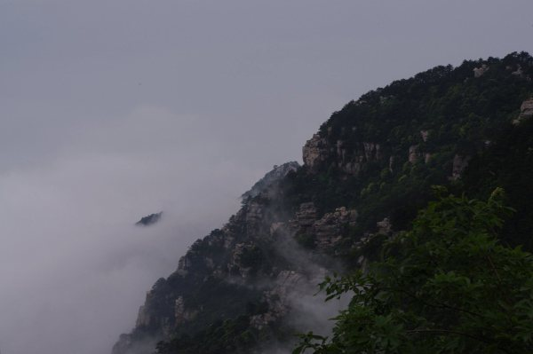
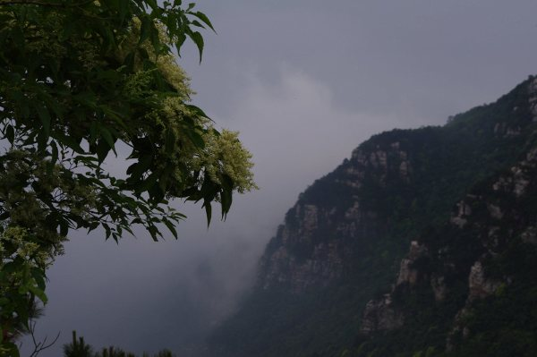
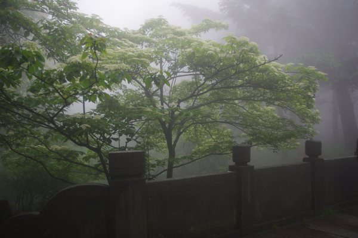
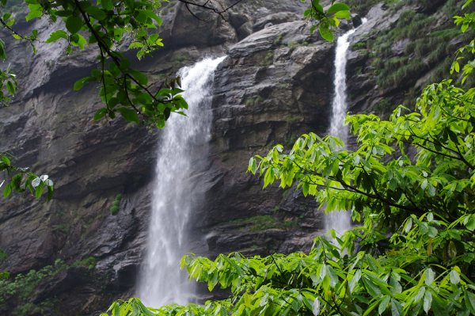
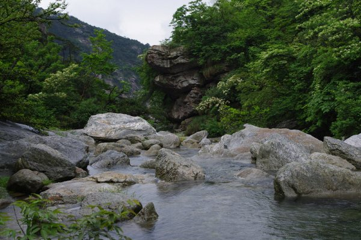
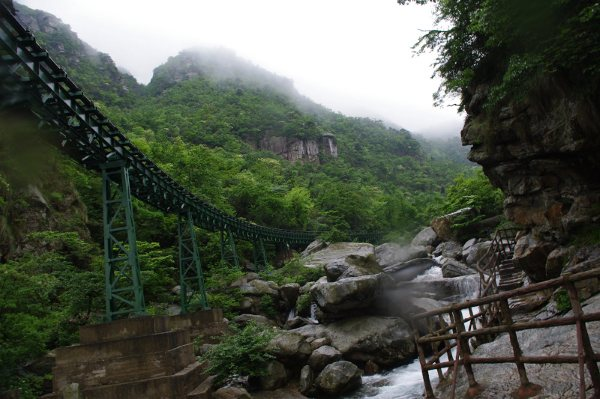
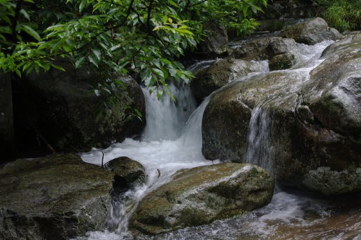
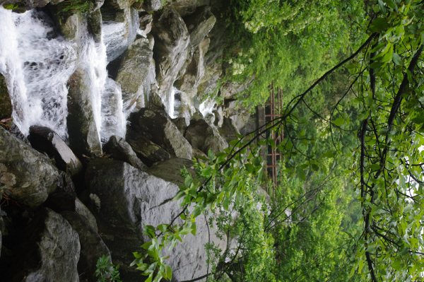
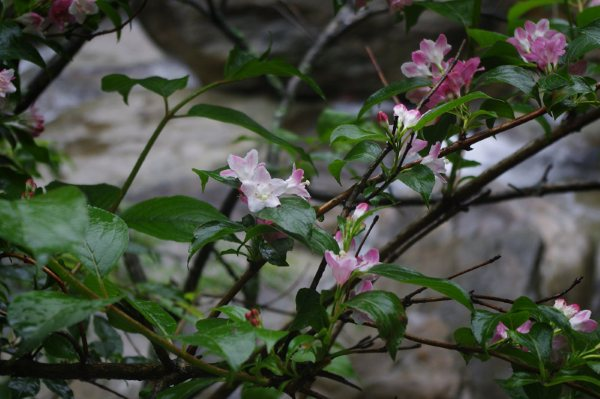

庐山行
5/25/2010 9:28:26 AM
上周部门组织去庐山旅游, 周四(2010.05.20)晚上硬卧, 从萧山南站出发, 上车之后几个人就在下铺”拉被子当桌子”, 开始三国杀. 直到车上都熄灯了,我们一直挑灯野战(准备了手电筒), 杀到几点忘了, 反正睡下之后一直睡到早上到站.
Day 1 - 2010.05.21 - 周五
下车出了车站, 本地导游就领我们到车站前面的一家饭馆吃饭, 庐山站其实挺破的, 呵呵, 本来没对这顿早餐报太大期望,不过最终还好啦. 吃完早餐下楼出门, 门外有买雨衣的,虽然带了伞,但知道雨天爬山, 伞是起不到什么作用的, 就买了一间先备着.
大家都早餐完毕后, 上车发牯岭街, 到了下榻的所谓还不错的三星的鑫缔酒店, 注册分房间, 行李扔下之后, 在酒店前面的旅游班车点坐车, 先去了”什么琴湖”, 逛了逛周边的景点, 说实在的, 真tmd没啥好看的, 最显眼的就是雾, 飘荡的雾, 到处都是雾蒙蒙的.

到11点半, 出发去看”天生一个仙人洞, 无限风光在险峰”. 从幸运石到”险峰”这段是够陡的, 还有些看头, 到后面所谓的仙人洞, 不说也罢了.


逛到4点半, 打道回府, 导游跟酒店打声招呼,我们才得以提前有热水洗澡. 不过我没洗, 直接跑210房间加入了三国杀团队, 呵呵, 杀到5点半还是6点来着, 然后下楼吃晚饭. 吃完晚饭, 部门组织了一个”睡衣派对”, 7点15开始. 前面就是折腾新人, 三轮新人秀, 虽然阿里巴巴最终的评判标准都是以更淫更荡为准, 可有一对实在演得太好了, 呵呵, 充分的准备, 贴近现实的剧情, 加上顺畅的演出过程, 最终赢得新人秀的冠军. 演出中间穿插的游戏, bingo我赢了个杯子, 也算小有收获哈, 呵呵, 到后面大家都要起身跑了, 才要选睡衣国王和王后, 趁他们纠缠之际,我急忙脱身而出, 跑210等着人回来三国杀,哈, 老子才不凑那个热闹那.
大约过了10-15分钟, 玩三国杀的人陆续加入, 这天晚上, 我们一直三国杀到第二天的0:30...
Day 2 - 2010.05.22 - 周六

早上得早起, 7:30分电话叫醒, 洗漱下楼吃饭, 8:30 出发去含鄱口, mmd, 又是雨加雾, 到了含鄱口, 实际上, 啥也看不见, 只看雾了.
待了大约10-20分钟, 大家开始往回撤, 到下站植物园, 实际上, 猜也猜得到, 就这时节, 啥杜鹃阿之类, 基本都开过了, 真没啥好看的, 一会儿就逛完了. 领队跟导游商量, 直接吃中饭, 吃了中饭到三叠泉.
吃中饭的地点虽然破(农民家, 好像我家小时候那种破石头房子), 不过饭菜还不错啦,尤其是竹笋和小山鸡. 鱼基本上都不新鲜, 吃完饭看各个桌子上就鱼剩下最多. 心里默念”暴殄天物”啊,可事实却是, 那鱼真得难吃 ;-)
去三叠泉之前, 导游现统计坐缆车的人数, 我选择了去到谷底的时候坐缆车,回来的时候自己爬上来. 可坐过才知道, 其实缆车(确切的讲是轨道车)就走很少的一段, 最艰险的却是接下来的山路, 一直走路下到谷底, 腿都打颤的感觉.

在瀑布下拍了一些照片,我就开始往回走了, nnd, 这三叠泉的山路真不是盖的, 真得是上气不接下气, 只能是走一段, 歇一段, 我开始往回走的时候, 部门还有人没有下到谷底的, 等到了缆车站, 在那里等着的一个导游说, 我是第一个回来的,哈,居然捞了个第一. 回来的时候, 缆车那段我改成走路, 发现, 这路上的景色比在缆车上看到的爽多了, 就胡乱咔嚓了一通.



等了大约2个小时左右,等大家都爬上来之后, 我们就乘车会旅馆了. 既然是6点吃饭, 我们就到210又三国杀了一局才下楼吃饭.
晚上吃完饭大家先回房洗澡, 之后又是210开始玩三国杀, 这天, 我们玩到第二天的1:00am.
Day 3 - 2010.05.23 - 周日
本来行程安排这一天上午是可以一觉睡到自然醒的, 可旅行团临时更改, 我们9:30就得乘车下山, 旅行社安排在山下用早中餐,可我们都不恶, 最后领队跟导游争论后, 这个早中餐取消, 乘车直奔南昌, 准备搭乘火车回去. 1点左右到南昌, 在预定的酒店吃中餐的时候, 被告知有突发事件,大家吃完饭不要随意走动.
原来, 沪昆线江西省内有一段上午突发泥石流, 导致某火车7,8节车厢脱轨, 我们订的回程动车也走这条线, 发生了这事儿, 我们只好逗留, 然后临时改订绕路的2532列车, 但晚上9点半才发车, 所以, 下午大家按照小团队划分进行活动, 有得跑到南昌市某些景点去玩的(比如滕王阁), 有得在铁路宾馆订房间睡觉, 玩游戏, 我们10多好也订了个房间玩三国杀, 因为人多,我就让谦让一下, 让别人玩了. 电脑里又一部讲日本上世纪60年代的一部电影-<初恋>, 下了一直没看, 就拉出来看了.
其实这片子一直没看就是因为之前粗略扫了一下,发现格调/氛围很沉闷, 实际看过之后确实如此, 当时下它纯粹是佩服这个电影顺带描述的那个事件, 一个人, 没有任何争斗的劫持了3亿日元, niubility. 不过, 电影最后的一段确实有些心有戚戚的感觉.
May 6, 1966, Today, I met a young girl. With unclounded eyes, She looked at me and said "I don't want to be an adult.". I fell in love with her. The Kind of love you feel only once. But I can never tell her about it. I couldn't bear to cloud those eyes.
根据日本人很有意思, 许多”好”的日本电影里, 那些人表达爱意都很含蓄, 深沉, 比如这部电影, 以及<盛夏猎户座>里的那个舰长, 可现在的日本人给人的印象又是那样的大相径庭. 或许是年代不一样, 又或许跟国家人种没有关系, 纯粹是个体的差异而已, 只不过, 这两部描述的人物都属于那种含蓄型的吧!
晚上去KFC解决肚子问题, 然后集合入站等车, 破费了点银子去茶亭候车室等着, 后来才发现, nnd, 这决定太英明了. 这一天, 几乎趟趟火车晚点, 甚至取消的, 我们从9:30开始等,一直到后半夜2点半才有消息说车到了, 唉, 痛苦阿, 要知道, 都好几个晚上没好好睡觉了, 有困又乏, 简直了. 要不说前面的决定英明那, 茶亭候车室有沙发, 在沙发上迷糊了几觉, 多少可以抗一阵了.
迷糊的时候, 原来三国杀那活儿人继续中...
三点上车, 爬上铺直接睡觉, md, 累死又困死了...
Day 4 - 2010.05.24 - 周一
早上9点半左右爬起来(不爬起来不行了, 睡的腰疼, 破硬卧),本来我们订的票都是临时的, 大部分都是上铺, 不过, 早上起来发现一对下铺没人, 得, 正好又给三国杀提供场所了, 大家又是”拉被子当桌子”, 继续疯狂的三国杀,一直杀到下午2:30分,车到杭州城站火车站才停下...
今天基本是不用上班了, 住城里的直接回家, 其他人坐旅行社准备的大巴回滨江, 然后各自四散.
回家洗个热水澡, 下楼吃了今天唯一的一顿饭, 要了份酸菜鱼犒劳一下自己,呵呵.
晚上给家里打个电话报个平安, 然后就写下了这些文字.
总结这次庐山之行, 基本上就是: 两天游玩, 两天折腾, 四天疯狂(三国杀).
More Pictures can be found at : http://www.flickr.com/photos/50062972@N07/archives/date-posted/2010/05/24/
- 5/25/2010 9:59:23 AM
景色不错,果然名不虚传啊. 公司还给搞活动真羡慕啊